Risk Desk User Guide
For the risk team and the second trader. How to start the desk, read the screens, set limits, pause algos and place manual orders.
1. What this is
The trading server runs on a machine at CME. The risk desk is a normal Windows PC that shows a live copy of that server's state: every position, limit and working order. From the desk you can change the firm's limits, pause the algos, and place, amend or cancel manual orders.
The one rule: always use the server workspace. It shows the firm-wide (global) limits, positions and orders, across every strategy.
A strategy workspace (File > New Strategy Workspace...) shows only one strategy's orders, positions and limits, and books manual orders to that strategy. It is not used on the risk desk.

2. Starting up
2.1 The package folder
You receive one zip file, BigajRiskDesk.zip. It unzips to a folder named BigajRiskDesk.
- Unzip it to a folder such as
C:\BigajRiskDesk. The directory path, including the strategy names inside it, must be less than 256 characters; a longer one stops the Mirror with a message ending "move the Mirror's folder nearer the drive root". - Check the folder holds
Mirror.exe,Workspace.exe,Start.bat,MirrorConfig.json,WorkspaceConfig.jsonand three.dllfiles. Nothing else needs installing. - Your IT contact must allow the CME box to connect to this PC on port 47793 (a firewall rule). This is done once.
2.2 Starting the desk
- Double-click
Start.bat. - Two black console windows open. One belongs to the Mirror (the link to the CME box). The other belongs to the Workspace (the screens). Leave both open. They print messages that help when something goes wrong.
- The Workspace window appears. While it waits for the Mirror, its console repeats a line ending "failed to connect to server ... will try again". This is normal for the first few seconds.
- When the Mirror console prints "RemoteMirror: copy complete, Workspaces may start", the Workspace window fills in.
- Check the window's title. It reads "Server: ...\CME_NewRelease, Context [...\CME_NewRelease]", with the same path twice. That means you are in the server workspace.
Good to know.
- Closing the Workspace leaves the Mirror running.
- Double-clicking
Start.batagain opens a second Workspace beside the first. It does not start a second Mirror. - Closing the Workspace cancels any manual orders you placed from it that are still working (see section 3.3).
To restart only the Mirror:
- Open the package folder in Explorer.
- Double-click
Mirror.exe. Do not useStart.bat, which would also open another Workspace. - Wait for the Mirror console to print "RemoteMirror: copy complete, Workspaces may start". The open Workspace windows then rebuild themselves.
2.3 The two config files
Both are plain text files. Open them with Notepad. A backslash in a folder path must be written twice, for example "C:\\Desk\\Data". You will normally only change the fields below.
MirrorConfig.json
{"MirrorRole":"Remote","ServerName":"CME_NewRelease","ClockMode":"Realtime","ListenPort":47793,
"IPWhitelist":["10.172.13.228"],"ConnectAddresses":[],"DirectoriesRoot":"Data","IsConsoleVisible":true}
| Field | What it means |
|---|---|
| ServerName | The name of the trading server on the CME box. It must match the box exactly, and must match WorkspaceConfig.json. |
| DirectoriesRoot | Where the desk keeps its copy. "Data" means a folder named Data inside the package folder. Must match WorkspaceConfig.json. |
| IsConsoleVisible | true shows the Mirror's console window. false hides it and writes its messages to Mirror.log in the folder; the Mirror must then be stopped from Task Manager. |
| ListenPort, IPWhitelist, ConnectAddresses | How the link is made. Leave them as delivered unless the owner tells you otherwise. The whitelist holds the CME box's address; any other caller is refused. |
| MirrorRole, ClockMode | Leave as "Remote" and "Realtime". |
WorkspaceConfig.json
{
"ServerName": "CME_NewRelease",
"DirectoriesRoot": "Data",
"Workspaces": [
// if StrategyName is blank, the workspace shows the aggregate of all strategies (a server workspace)
{ "StrategyName": "", "WorkspaceName": "RiskDesk" }
]
}
| Field | What it means |
|---|---|
| ServerName | Same as in MirrorConfig.json. |
| DirectoriesRoot | Same as in MirrorConfig.json. If the two differ, the Workspace waits forever. |
| Workspaces | One window per entry, opened in list order. The first is the main window. |
| StrategyName | Keep this "" (empty). Empty means a server workspace, which is what the risk desk uses. |
| WorkspaceName | The name of a saved layout to open at start, without the .workspace ending, for example "RiskDesk". Empty opens a blank window. A name that does not exist also opens a blank window, with no error. See section 4.3. |
2.4 If it waits or refuses
| What you see | What to do |
|---|---|
| Workspace console keeps saying "failed to connect to server ... will try again" |
|
| Mirror stops with a message containing "array layout" and "deploy the same build to both ends" | The box and the desk run different versions. Ask the owner for the zip that matches the box. Do not use the desk until then. |
| Mirror stops with "...the copy this desk's open Workspaces still map is ..." | Close every Workspace window, then start the Mirror again. |
| Mirror stops with "the Local end serves X; this Remote is configured for Y" | Your ServerName (or ClockMode) does not match the box. Fix it in both config files. |
| A config error naming the file, for example "ServerName is empty; fill in ..." | The file was missing or empty, and was written with defaults. Fill in the field it names. |
The Mirror's console may close straight away when it stops, before you can read the message. To read it:
- Open the package folder in Explorer.
- Click the address bar, type
cmdand press Enter. A command window opens in that folder. - Type
Mirror.exeand press Enter. - Read the message. It stays in that window after the Mirror stops.
3. The Mirror
3.1 What it is and why it is needed
The trading server keeps all its live state in the CME box's memory: orders, positions, limits, order books, rate limits. The desk PC cannot read that memory over the internet.
The Mirror solves this. It keeps a live copy of the server's memory on the desk PC, received over one network link. The Workspace reads that copy. Updates arrive at least every 100 ms, and at once when one of your orders changes.
The link also carries your actions up to the box: new orders, amends, cancels, limit edits, pause and play. On the box, each of your Workspace windows has a stand-in that replays your clicks. The normal risk checks run there, on the box.
This has two consequences:
- Your own order appears on screen only after it has gone to the box and come back: about one round trip (the latency in the top bar), plus up to 100 ms.
- The desk has no refusal pop-ups and no Audit Trail. The Audit Trail widget is empty on a desk. Refused orders are alerted on the box and sent to Telegram.
One Mirror serves every Workspace window on the PC. Every window shows the same latency.
3.2 When the link drops
- Both ends send something at least once a second. If nothing arrives for 10 seconds, the link is declared dead.
- The top bar then reads "Connection broken – reconnecting…" (see section 5).
- When the box declares the link dead, it cancels every working order placed from this desk. Algo orders are not affected.
- While the link is down, your clicks are dropped. No message tells you. The top bar is your signal.
- An order that reached the exchange just as the link died keeps working, unseen, for up to 10 seconds before it is cancelled.
If the latency is climbing, do not click. Clicks are not thrown away during a short stall. A click made during a stall shorter than 10 seconds is carried out when the stall ends, at the market as it is then. Example: you click Buy one second into a nine-second stall. The order reaches the exchange about eight seconds later, at whatever the price is by then.
When the link returns, the Mirror receives a full fresh copy and your windows carry on as before. A click in the first moment after reconnecting may be dropped; check that it appeared.
3.3 Restarts
| What restarts | What you see | What happens to orders |
|---|---|---|
| The trading server on the box | "Connection broken – reconnecting…" at once. When the server is back, every Workspace window rebuilds itself in place: same size, position and widgets. A window that cannot reconnect closes and says why in its console. | A restarted server cancels every working order. After a restart the algos are paused until the trader resumes them. |
| The Mirror on the box | Treated as a link drop. The windows carry on after it reconnects. | This desk's working manual orders are cancelled. |
| The Mirror on the desk | "Remote Mirror offline" until you restart Mirror.exe. Then the open windows rebuild themselves. | After 10 s with no link, this desk's working manual orders are cancelled. |
| You close the Workspace | The window closes. The Mirror keeps running. | Manual orders placed from that window that are still working are cancelled. |
After a server restart, a ladder reopens on the same instrument number. If the server numbered its instruments differently, the ladder can show a different instrument. Check the ladder's title.
4. The Workspace window
The window has a top bar with the menus on the left and the status text on the right. Below it is a grey area where widgets float.

4.1 The menus

| File menu item | What it does |
|---|---|
| New Server Workspace | Opens another blank server workspace window. In a server workspace this does the same as Extend Workspace. |
| New Strategy Workspace... | Opens one strategy's workspace. Not used on the risk desk. |
| Extend Workspace | Opens another blank server window, for example for a second monitor. Saving a layout from any server window also saves every other open server window as an extra window (section 4.3). |
| Open Workspace... | Loads a saved layout into this window (section 4.3). |
| Save Workspace | Saves to the layout file this window was last opened from or saved to. If there is none, it asks for a name. |
| Save Workspace As... | Saves the layout under a new name. |
| Save Screenshot... | Saves a picture (PNG) of this window. |
| Open Server Directory | Opens the server's folder in Explorer. |
| Exit | Closes every window of this Workspace program. The Mirror keeps running. A second Workspace started by running Start.bat again stays open. Closing the last window of this program does the same as Exit. |
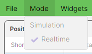

4.2 Arranging widgets
- Add a widget from the Widgets menu. It opens in the middle of the window at its normal size.
- Move it by dragging its grey title bar.
- Resize it by dragging any edge or corner.
- Bring it to the front by clicking anywhere on it.
- Minimise it to its title bar with the — button. Click — again to open it. It reopens at a standard height, not its old size; drag it back to size.
- Close it with the ✕ button.
Columns
- Right-click any column header. A tick list of every column appears.
- Click a column name to show or hide it. Some useful columns are hidden by default; this guide marks them (hidden).
- Drag the edge of a header to make a column wider or narrower.
- Drag a header sideways to move the column.
- Click a header to sort by that column.
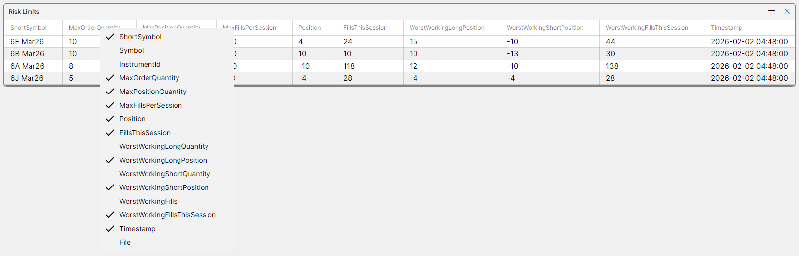
Column choices are saved with a layout for Risk Limits, Orders, Message Efficiency and Rate Limits. They are not saved for Positions: hidden or resized Positions columns come back as default when a layout is loaded.
4.3 Saving and loading a layout
A layout (a .workspace file) remembers the window's size and position, every widget with its position and size, and every other server window open at the time (opened with Extend Workspace or New Server Workspace; in a server workspace the two do the same thing). Close any extra windows you do not want before saving. Layouts are stored in BigajRiskDesk\Data\Servers\Realtime\CME_NewRelease\Workspaces. Every server workspace window on this desk can use them.
To save a layout
- Arrange the widgets as you want them. Open any minimised widgets first: a widget saved while minimised reopens as a thin strip, and needs two clicks on — to open.
- Close any extra server windows you do not want saved with this layout.
- Choose File > Save Workspace As...
- The "Save Workspace As" dialog opens in the Workspaces folder and suggests
default.workspace. - Type a name, for example
RiskDesk, and click OK. - Later changes: use File > Save Workspace to save over the same file.
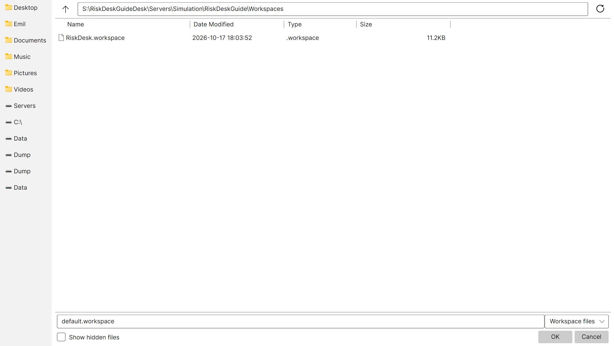
...\Data\Servers\Realtime\CME_NewRelease\Workspaces.To load a layout
- Choose File > Open Workspace...
- Pick the
.workspacefile and click OK (or double-click it). - The window takes the saved size and position, its widgets are replaced by the saved ones, and any saved extra windows open too.
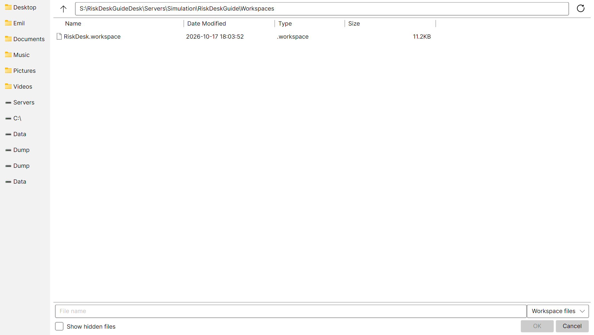
- Loading a layout into a window that already has extra windows open does not close them. Close them first.
- If a save or load fails, the only message is in the Workspace's console window. Nothing pops up.
To open a layout automatically at start-up
- Save the layout, for example as
RiskDesk.workspace. - Close the Workspace.
- Open
WorkspaceConfig.jsonin Notepad. - Set
"WorkspaceName":"RiskDesk"(no.workspaceending). Keep"StrategyName":"". - Save the file and double-click
Start.bat.
5. The top bar: latency, connection and clock
At the right of the top bar is one line of text, refreshed every 100 ms. On the desk it shows the latency, then the clock.
5.1 The latency
- It is the full round trip from the desk to the CME box and back, including the time the box takes to answer.
- It is the worst of roughly the last second. During a stall it climbs, second by second.
- It is shown to the microsecond, so a healthy link visibly flickers.
- It reads a little above the real click delay.
5.2 The connection states
| Text shown | Meaning | What to do |
|---|---|---|
| "264.764 ms" (a number) | The link is healthy. | Nothing. Watch for it climbing. |
| "Connection broken – reconnecting…" | The link to the box is down: a clean close, or 10 s with no answer. The box Mirror or the box server may have stopped. | Do not click. Your working manual orders will be cancelled. Wait for it to come back; if it does not within a minute or two, call the trader or owner. |
| "Remote Mirror offline" | The Mirror on this PC has stopped (closed, crashed, or refused a build mismatch). | Read its console if it is still open, then double-click Mirror.exe. The Workspace rebuilds itself. |
| "Remote Mirror not responding" | The Mirror on this PC is running but stuck for 10 s or more. | Close it from Task Manager and double-click Mirror.exe. |
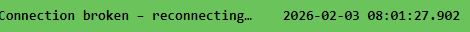
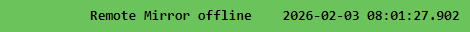
The colour of the bar does not show the connection. The bar is green whenever the desk runs live (yellow only in a test system), connected or not. Always read the text.
5.3 The clock
The clock is the time of the latest market-data update the server received that changed one of its order books. It is the moment that update arrived at the CME box.
- It is shown in UTC, not your local time. In UK summer time it reads one hour behind London clocks; in winter it matches them.
- During trading hours it should tick along constantly. If it stops while the market is active, something is wrong: the server is not getting market data. The feed is down, or the server is stuck. Call the trader or owner.
- It also stops, quite normally, when the market is closed or halted (for example the daily CME maintenance break and weekends), or when the server has no instruments open.
5.4 Reading the two together
| Clock | Latency | Meaning |
|---|---|---|
| Ticking | Steady number | All well. |
| Frozen | "Connection broken – reconnecting…" or climbing | The link, the box Mirror or the box server is down. Do not click. Your orders are cancelled after 10 s of silence. |
| Frozen | Healthy number | The box is reachable but no market data is changing the books. Normal if the market is closed or halted. During trading hours it is a feed problem: call the trader or owner. |
| Any | "Remote Mirror offline" or "not responding" | A problem on this PC. Restart Mirror.exe. |
6. The risk widgets
Open each from the Widgets menu. In the server workspace every widget shows the firm-wide picture: every instrument the server trades, every order from every algo and every desk, and the firm's limits. Grids cannot be typed into; changes are made through right-click menus.
A column marked (hidden) is hidden by default. Right-click a column header to show it.
6.1 Positions
One row per instrument the server trades. Each row is the firm's position: every strategy's fills plus every manual fill. This is also where you pause and resume the algos.

| Column | What it shows |
|---|---|
| StrategyId (hidden) | The strategy of the most recent fill on this instrument (0 after each server start until the first fill). It is not who owns the row: the row is always the firm's. |
| ShortSymbol | The instrument's short name, for example "6E Mar26". |
| Symbol (hidden) | The full exchange symbol. |
| AlgoStatus | The firm's master algo switch for this instrument: "Live" or "Paused". |
| InstrumentId (hidden) | The server's internal number for the instrument. |
| Quantity | The firm's net position in lots. Positive is long, negative is short, 0 is flat. |
| AvgPrice | The average entry price of the open position. Adding to a position averages it; a partial close keeps it; flipping from long to short (or back) resets it to the fill price. "NaN" when flat. |
| Profit | Total profit or loss in the contract's currency (US dollars on CME): Realized plus Floating. "NaN" when there is no market price to mark against (see below). |
| Realized | Profit or loss already locked in on lots that have been closed. |
| Floating | Profit or loss on the open position if it were valued at the current mid price. 0 when flat, "NaN" when there is no mark. |
| QuantityTraded | Total lots filled on this instrument, buys and sells both counted as positive, manual fills included. It is kept across sessions, not reset daily. |
| ProfitPerSide | Profit divided by QuantityTraded: profit per lot traded. 0 when nothing has traded. |
How profit is marked. The mark is the mid price, halfway between the server's best bid and best ask. Profit and Floating show "NaN" when the book has no bid or no ask, or when the instrument is not in its trading session. A single "NaN" that clears on the next refresh is harmless.
The right-click menus

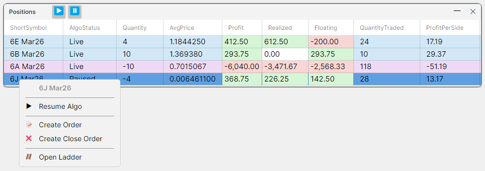
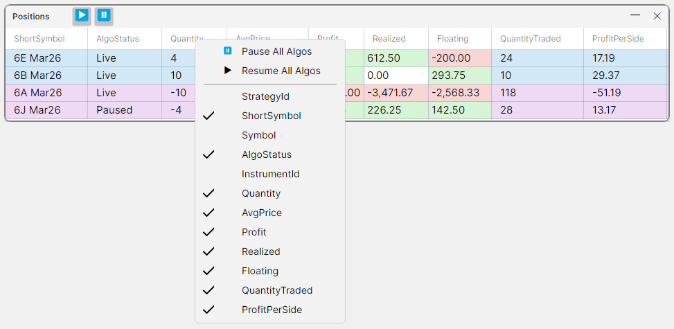
Pausing and resuming the algos
Each instrument has a firm-wide master switch. An algo may trade an instrument only while its own switch and the master switch are both Live.
To pause one instrument:
- Right-click the instrument's row in Positions.
- Click Pause Algo.
- Check that AlgoStatus on that row now reads "Paused" (within about a second on the desk).
To pause every instrument:
- Click ⏸ in the Positions title bar, or right-click a column header or empty space and choose Pause All Algos.
- Check that every row's AlgoStatus reads "Paused".
To resume (only when the trader asks):
- For one instrument, right-click its row and click Resume Algo. For every instrument, click ▶ in the title bar, or right-click a header or empty space and choose Resume All Algos.
- Check that the rows' AlgoStatus reads "Live".
What pausing does:
- The server cancels every algo order working on that instrument at once, and the algos send no new ones.
- The server refuses any new algo order that crosses with the pause.
What pausing does not do:
- It does not cancel or block manual orders.
- It does not change any strategy's own switch.
- It does not survive a server restart: after a restart the master switch is Live again. (In live trading every strategy starts paused after a restart anyway, until the trader resumes it.)
Create Order and Create Close Order open the Send Order widget for this instrument (section 7). Create Close Order fills in the quantity that would flatten the firm's whole position on that instrument.
6.2 Risk Limits
One row per instrument. It shows the firm's three limits, and the firm's live exposure from every order on the instrument, algo and manual. Rows refresh every quarter of a second.

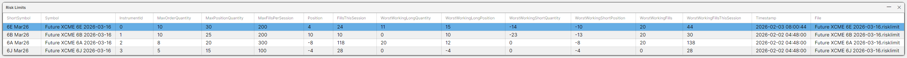
The three limits
- MaxOrderQuantity: the biggest single order. Applies to manual and algo orders.
- MaxPositionQuantity: the biggest firm position, long or short, assuming every working order on that side fills. Applies to manual and algo orders.
- MaxFillsPerSession: the most lots the algos may fill in one session. Applies to algo orders only.
Every column
| Column | What it shows |
|---|---|
| ShortSymbol | The instrument's short name. |
| Symbol (hidden) | The full exchange symbol. |
| InstrumentId (hidden) | The server's internal number for the instrument. |
| MaxOrderQuantity | The largest single order allowed, in lots. An order whose unfilled quantity is bigger is refused. For an amend it is the new unfilled quantity that counts. 0 means no order at all is allowed, not even a closing one. Existing orders can still be cancelled. |
| MaxPositionQuantity | The largest firm position allowed, long or short, in lots, counting every working order on that side as if it filled. |
| MaxFillsPerSession | The most lots the algos may fill on this instrument in one session, buys and sells both counted, assuming every working algo lot fills. Manual orders ignore it. 0 stops the algos only. |
| Position | The firm's net position in lots: positive long, negative short. |
| FillsThisSession | Lots filled by algo orders this session, both sides counted as positive. Manual fills never count. Goes back to 0 when the session closes. A server restart mid-session also starts it at 0. |
| WorstWorkingLongQuantity (hidden) | Lots that all working buy orders (manual and algo) could still fill. Always 0 or more. |
| WorstWorkingLongPosition | Position plus WorstWorkingLongQuantity: the firm's position if every working buy filled. Compare it with MaxPositionQuantity. |
| WorstWorkingShortQuantity (hidden) | Lots that all working sell orders could still fill, written as a negative number. Always 0 or less. |
| WorstWorkingShortPosition | Position plus WorstWorkingShortQuantity: the firm's position if every working sell filled. Compare it with minus MaxPositionQuantity. |
| WorstWorkingFills (hidden) | Lots that all working algo orders, both sides, could still fill. Manual orders are not included. |
| WorstWorkingFillsThisSession | FillsThisSession plus WorstWorkingFills: the session's algo fills if every working algo lot filled. Compare it with MaxFillsPerSession. |
| Timestamp | When the server applied the last limit change, in UTC. If no limit file existed, the time the default was loaded. "—" if unknown. |
| File (hidden) | The name of the limit file on the CME box, for example "Future XCME 6E 2026-03-16.risklimit". |
"Worst working" is a deliberate worst case. Each working order counts at the largest quantity it could still fill, including amends the exchange has not yet confirmed.
Worked example. MaxPositionQuantity is 10. The firm is long 6 and has buy orders working for 3 more. WorstWorkingLongPosition is 6 + 3 = 9.
- A new buy of 2 is refused: 6 + 3 + 2 = 11, which is more than 10.
- A new buy of 1 is allowed: 6 + 3 + 1 = 10.
- A sell of up to 16 is allowed: the worst case lands at 6 − 16 = −10.
Editing a limit
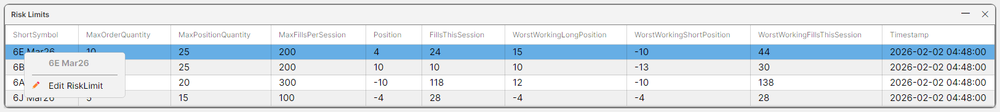
- Right-click the instrument's row in Risk Limits.
- Click ✏ Edit RiskLimit.
- The "Edit Risk Limit" dialog opens, with the instrument in bold. The three boxes hold the current limits, read fresh from the server.
- Type the new values in Max Order Qty, Max Position Qty and Max Fills / Session. Each must be a whole number, 0 or more. "1,000" is accepted.
- Click Confirm to send it, or Cancel to close without changing anything.
- Check the row: within a second or so it shows the new values and a new Timestamp.
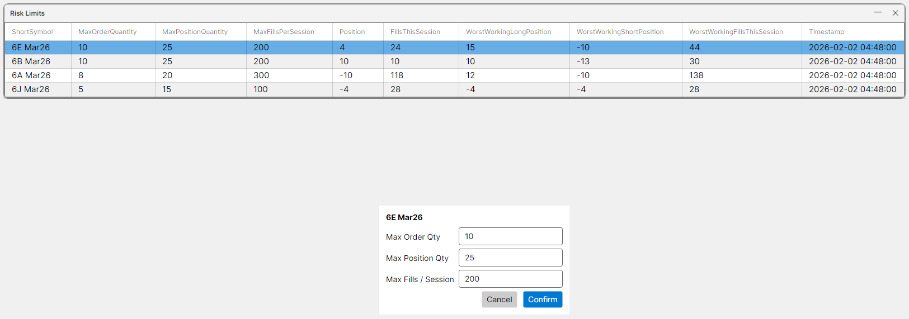
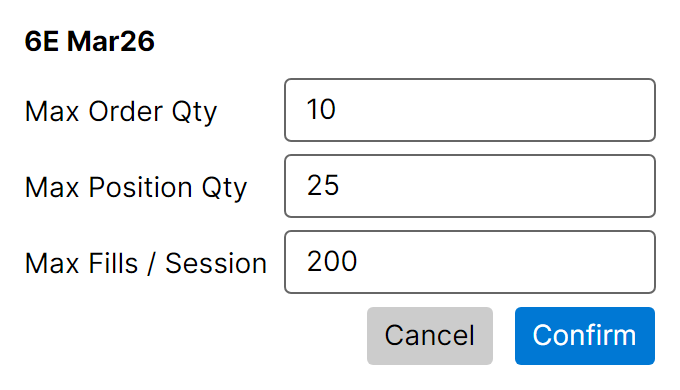

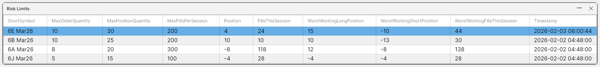
If a box holds something that is not a whole number of 0 or more, a red message appears, for example "Max Position Qty must be a whole number >= 0.", and nothing is sent.
- The change applies to the very next order. It is saved on the CME box and loads again after a restart.
- Lowering a limit does not cancel working orders. If you lower Max Position Qty, an order already past it may stay or shrink, but cannot grow. If you lower Max Order Qty below an order's unfilled size, that order can no longer be amended at all, not even made smaller, unless the amend brings it down to the new limit or below. It can still be cancelled. Cancel orders yourself if you need exposure off now.
- Lowering a firm limit can pause an algo. If the new limit is below what an algo is working, the algo's next order can be refused, and any refused algo order pauses that algo's own switch. The desk cannot see this: AlgoStatus shows only the master switch. Tell the trader, who resumes the strategy from its own workspace.
- If nothing changes after Confirm, the edit did not arrive. Nothing pops up. Check the top bar is connected and try again.
- An instrument with no saved limits starts with all three at 0 in live trading. Every order is then refused, manual included, until you set them.
6.3 Rate Limits
The exchange limits how many order messages the firm may send. The server enforces its own limit first. There is one row per order channel (a "CoreGroup"; on CME, one exchange session). On the live box there may be several rows; the test system has one.

| Column | What it shows |
|---|---|
| CoreGroup | The order channel's name as the server publishes it, for example "SandP500". |
| Duration | The length of the rolling window, for example "3 s". |
| Limit | The most order messages allowed in any window of that length. 0 means every new order and every amend is refused, except an amend that only makes an order smaller at the same price. Cancels always go through. |
| Count | Messages counted in the window right now. It falls between sends as old messages leave the window. On the box it may read slightly high, never low. On the desk it is worked out from the copy, which can be a fraction of a second old, using this PC's clock. It can therefore read low. If this PC's clock is badly wrong it can show 0 or the full count. Keep the PC's clock synchronised. |
What it refuses. When the window is full, the server refuses new orders and amends, manual and algo alike. It also refuses a sudden burst of more than 255 messages in a small slice of the window. Cancels, and amends that only reduce the quantity at the same price, are counted but never refused, so you can always cancel. A rate-limit refusal is silent: the order just does not appear or change. There are no row actions in this widget.
6.4 Message Efficiency
CME compares the number of order messages a firm sends with the volume it trades, per product group and per trading day. If the ratio goes over CME's published benchmark, CME charges a surcharge. This widget shows where the firm stands. It only displays the numbers; it never refuses an order.
Messages are weighted: a new order counts 0, an amend 1, a cancel 3. Outside 07:00 to 16:00 CME time each weight is multiplied by 0.1. Efficiency is the weighted total divided by lots traded.

| Column | What it shows |
|---|---|
| ProductGroupRoot | CME's product group code, for example "6E". |
| TradeDate | The trading day these counts belong to. |
| TradeTime (hidden) | The time of day (CME time) when that trading day ends. |
| RawMessages | Order messages sent today in the group, unweighted: every new order, amend and cancel counts 1. |
| WeightedMessages | The weighted message total (see weights above). |
| QuantityTraded | Lots filled today in the group, buys and sells both counted as positive. |
| Efficiency | WeightedMessages divided by QuantityTraded (equal to WeightedMessages if nothing has traded). The colour compares it with the benchmark that currently applies: green under 75%, yellow 75% to 90%, orange 90% to 100%, red at or over the benchmark. Green also while RawMessages is below the lowest tier threshold (Tier3). |
| Tier3, Tier2, Tier1 | Daily raw-message thresholds. Once RawMessages passes a tier's threshold, that tier's benchmark applies. Tier1 has the highest threshold. |
| Tier3Benchmark, Tier2Benchmark, Tier1Benchmark | The highest Efficiency allowed once that tier applies. |
| Tier0, Tier0Benchmark | Shown for reference only; not used in the colour. |
The counts go back to 0 and TradeDate moves on when the instrument's session closes. If a row is red with every tier showing 0, the tier figures have not been set up for that group; tell the owner. Do not use the right-click folder items on the desk: they point at an empty folder on this PC.
6.5 Orders
Every working order in the firm: every algo's and every desk's, on every instrument. Rows are blue for buys and purple for sells, grouped by instrument, highest price first. A row whose price has just changed may stay out of place. Click the StatePrice header to sort by price. Finished orders (filled, cancelled or refused) disappear from the list.

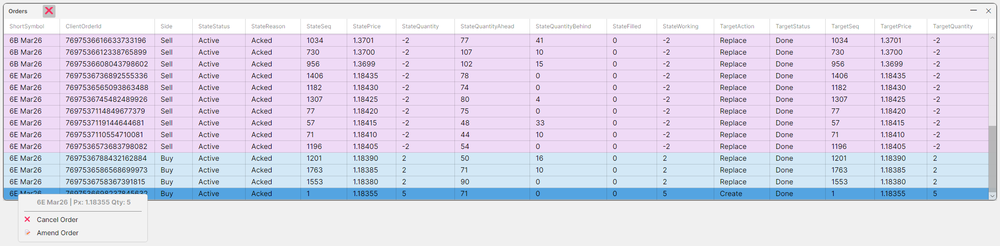
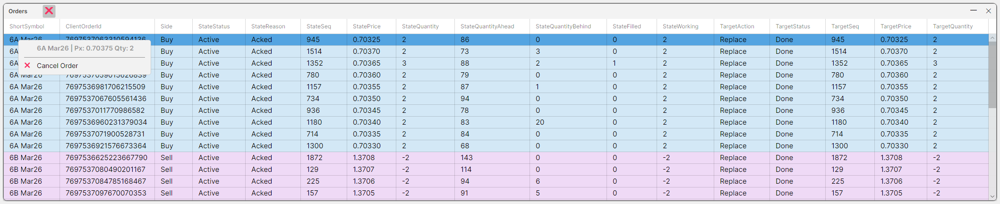
Actions:
- Cancel one order: right-click its row, then ❌ Cancel Order. Works on any order, algo or manual. If you cancel one algo order while that algo is Live, it will usually place a new one at once.
- Amend one manual order: right-click its row, then 📝 Amend Order. See section 7.3.
- Cancel everything: the ❌ button in the title bar (tooltip "Cancel All Orders").
"Cancel All Orders" cancels every order in the firm, every algo's and every desk's. An algo that is still Live will simply place new orders straight away. To stop the algos, pause them in Positions first; pausing also cancels their orders.
7. Ladders and manual orders
Manual orders from the server workspace are booked to the firm's house book: the firm's own account for manual trades (strategy 0), separate from every algo. No algo's position changes when they fill.
7.1 Opening a ladder
From Positions:
- Right-click the instrument's row in Positions.
- Click Open Ladder.
From the Instruments widget instead:
- Open Widgets > Instruments.
- Right-click the instrument's row.
- Click 🪜 Open Ladder. The item is greyed out until the instrument is allocated. "Allocate <Symbol>" makes the server open that instrument's market data. Only allocate an instrument if the trader or owner has asked you to.
The ladder is saved with your layout and reopens on the same instrument.

Reading the ladder
- The title is the instrument. The header shows Pos: (the firm's position: blue long, purple short) and PnL: (the firm's profit: green or red).
- There are no column headings. From left to right the five columns are: My Buys, Bids, Price, Asks, My Sells.
- Bids (blue) and Asks (purple) show the market quantity at each price.
- My Buys shows a buy as "quantity > ahead"; My Sells shows a sell as "ahead < quantity". "Ahead" is the market quantity queued in front of the order.
- In the server workspace, My Buys and My Sells show every order on the instrument, the algos' included, not only yours.
- Scroll with the mouse wheel. The ladder centres itself once when it opens. The ➖ button at the top right ("Lock Ladder Center") keeps it centred while pressed in.
- Right-click the header bar to untick "Show My Orders" and hide the two order columns.
- There is no click-to-trade. A left-click does nothing. All orders go through right-click menus and the Send Order widget.
7.2 Creating an order
From the ladder:
- Right-click the price you want.
- Click 📝 Create Order @ <price>. The Send Order widget opens on the Create tab with that price and quantity 0.
- Type the quantity: positive to buy, negative to sell. Or use ▲ and ▼ (one lot per click).
- Check the button. It reads "Create Buy N" in blue, or "Create Sell N" in purple.
- Click it.
- Check the order appears in the ladder and in Orders, about one round trip later.
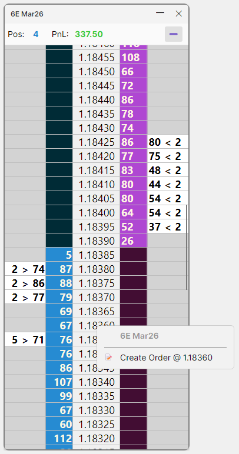
From the Send Order widget (Widgets > Send Order, or Create Order on a Positions row):
- On the Create tab, pick the instrument from the drop-down. The price is set to the middle of the market and the quantity to 0.
- Set the price: type it, use ▲ ▼ (one tick per click), or left-click a price on the small ladder on the right. A typed price is rounded to the nearest tick.
- Set the quantity: positive to buy, negative to sell. Typing "-" first starts a sell.
- Check the button text and colour, then click it.

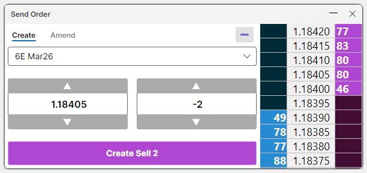
Create Close Order (right-click a Positions row) opens Send Order with the quantity that would flatten the whole firm's position on that instrument, at the mid price. Check the price and quantity before you click.
All manual orders are limit orders that last for the day. Clicking with quantity 0 or no price does nothing. There are no keyboard shortcuts.
7.3 Amending an order
Only manual orders can be amended. Algo orders can only be cancelled from the desk.
- Right-click the order: in the ladder, right-click its cell in My Buys or My Sells; or in Orders, right-click its row.
- Click 📝 Amend Order. The Send Order widget opens.
- Click the Amend tab. (The widget currently opens with the Create tab still highlighted and the order box empty. This is a known issue.)
- Check the order box shows the right order, for example "6E Mar26 | Px: 1.18355 Qty: 5".
- Change the price and/or the quantity. The quantity is the unfilled part of the order; a sell shows as negative. You cannot change a buy into a sell or back.
- Click Amend.
- Check the order moves on the ladder or in Orders.
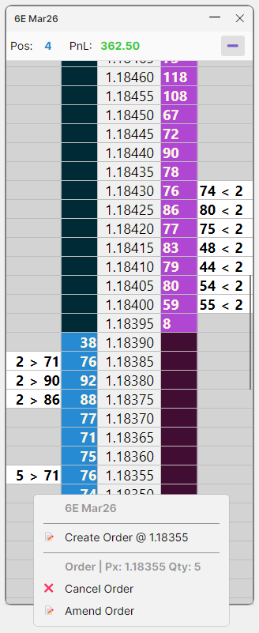
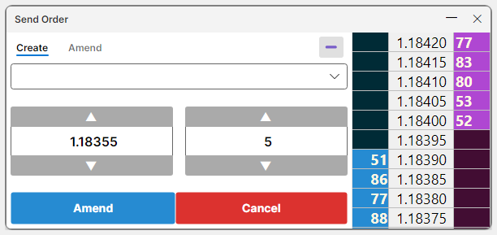
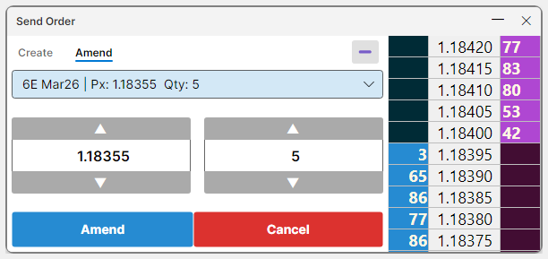
From the Send Order widget directly:
- Open Widgets > Send Order.
- Click the Amend tab.
- Pick the order from the drop-down.
- Change the price and/or the quantity, then click Amend.
The drop-down also lists algo orders. Picking one and clicking Amend does nothing; Cancel works.
Keep your place in the queue. If you keep the same price and only make the order smaller, it is sent as a reduction: it keeps its place in the queue and is never refused by the rate limit. Any other change (a new price, or a bigger size) loses the queue place. To take an order off, use Cancel, not a quantity of 0.
7.4 Cancelling an order
Any one of these works, for manual and algo orders alike. Cancels are never refused by the rate limit.
From the ladder:
- Right-click the order's cell in My Buys or My Sells.
- Click ❌ Cancel Order.
From Orders:
- Right-click the order's row.
- Click ❌ Cancel Order.
From Send Order:
- Click the Amend tab.
- Pick the order from the drop-down.
- Click the red Cancel.
Everything at once:
- Click the ❌ in the Orders title bar. This cancels every order in the firm (see section 6.5).
After any route, check the order has gone from the ladder and from Orders. If you cancel one algo order while that algo is Live, it will usually place a new one at once; pause it in Positions to stop it.
7.5 When an order is refused
The desk shows no pop-up for a refusal. What you see:
- A refused new order never appears, or appears for a moment and vanishes.
- A refused amend leaves the order at its old price and size.
Refusals are alerted on the CME box and sent to Telegram, except the "silent" ones marked below.
| Reason | What it means | What to do |
|---|---|---|
| QuantityExceedsRiskLimit | The order's unfilled quantity is above the firm's MaxOrderQuantity (or MaxOrderQuantity is 0). | Send a smaller order, or raise the limit in Risk Limits. |
| PositionExceedsRiskLimit | The order could take the firm past MaxPositionQuantity, counting every working order on that side, algo ones included. | Check WorstWorkingLongPosition / WorstWorkingShortPosition in Risk Limits. Send less, cancel other orders on that side, or raise the limit. Making an order smaller is never refused for position. It is still refused (QuantityExceedsRiskLimit) if the smaller size is above MaxOrderQuantity. |
| NotInSession | A new order while the instrument's market is not open. | Wait for the session to open. |
| TooManyOrdersPerSecond (silent) | The order channel's rate limit is full. | Check Rate Limits. Wait a moment and try again. Cancels still work. |
| CantAllocateClientOrderId | This window already has 64 working orders. | Cancel some, or use another window. |
| QuantityNotValid | Quantity outside 1 to 65,535 lots. | Fix the quantity. |
| TooManyActiveTargets (silent) | Too many changes in flight on one order. | Wait for earlier amends to be confirmed, then try again. |
A manual order's refusal never pauses an algo.
8. Which limits a manual order obeys
A manual order is any order placed from a Workspace or a desk. It is checked on the CME box like this:
| Check | Manual order? | Notes |
|---|---|---|
| Firm MaxPositionQuantity | Applies | Counts every working order on that side, algo ones included, not just the current position. Example: limit 10, firm long 6, algos bidding for 3: a manual buy of 2 is refused. |
| Firm MaxOrderQuantity | Applies | A manual order larger than this is refused. If it is 0, even a closing order is refused. |
| Order rate limit | Applies to new orders and amends | Cancels and same-price reductions are never refused. |
| Market open | Applies to new orders | A new order is refused while the instrument's session is not open. |
| Order size 1 to 65,535 lots | Applies | Applies to every order. |
| MaxFillsPerSession | Ignored | Manual fills also never add to FillsThisSession. |
| Strategy limits | Ignored | Only the firm's limits are checked. |
| Algo pause (master or strategy) | Ignored | You can trade manually while the algos are paused. |
| Message efficiency | Ignored | It never refuses anything, for anyone. |
In short: manual orders ignore the fills limit, strategy limits and the algo pause. They still obey the firm's max position, the firm's max order size and the order rate limit, and a new order must be sent while the market is open.
9. Troubleshooting
| Symptom | Likely cause | What to do |
|---|---|---|
| Workspace stays blank; its console repeats "failed to connect to server ... will try again" | Mirror not running, the box has not connected, or the config files disagree. | Follow section 2.4. |
| Mirror stops with a message containing "array layout" and "deploy the same build to both ends" | The desk and the box run different versions. | Ask the owner for the matching zip. |
| Mirror stops with "...move the Mirror's folder nearer the drive root" | The folder path is too long. | Move the folder to, for example, C:\BigajRiskDesk. |
| Mirror console shows "refused <address>, not in IPWhitelist" | Something other than the CME box (or the box from a new address) tried to connect. | Tell the owner. Do not add addresses yourself. |
| "Connection broken – reconnecting…" | Link, box Mirror or box server down. | Do not click. Your manual orders are being cancelled. Call if it lasts. |
| "Remote Mirror offline" | The Mirror on this PC stopped. | Double-click Mirror.exe (not Start.bat). |
| "Remote Mirror not responding" | The Mirror on this PC is stuck. | End it in Task Manager, then double-click Mirror.exe. |
| Latency number keeps climbing | The link is stalling. | Do not click: clicks are carried out late, at a different market. |
| Clock frozen, latency healthy, market open | The server is not getting market data. | Call the trader or owner. |
| Clock an hour off your wall clock | The clock is in UTC. | Nothing; this is normal. |
| AlgoStatus still "Live" after Pause | The link is down. | Check the top bar; phone the trader to pause the strategy directly. |
| Every order on an instrument refused, manual included | MaxOrderQuantity is 0 (often: no limits saved yet), or the market is closed. | Set the limits in Risk Limits; check the session. |
| Algo orders refused for too many fills (TooManyFillsPerSession) | FillsThisSession reached MaxFillsPerSession, or MaxFillsPerSession is 0. | Raise MaxFillsPerSession if that is intended, then ask the trader to resume that strategy. Any refused algo order (fills, position or size limit) pauses that strategy's own switch. The desk cannot see this: AlgoStatus shows only the master switch. |
| My order never appears, no alert | Rate limit full (silent refusal), or the link was down when you clicked. | Check Rate Limits and the top bar, then try again. |
| Amend Order opens with an empty order box | Known issue (section 7.3). | Click the Amend tab. |
| Profit shows "NaN" | No bid or no ask in the book, or the session is closed. | Nothing, unless it lasts during trading hours. |
| Positions columns reset after loading a layout | Positions does not save column choices. | Set them again after loading. |
| A ladder shows a different instrument after a server restart | The server numbered its instruments differently. | Close it and open a new ladder from Positions. |
| A second Workspace window appeared | Start.bat was run again. | Close the extra window. Restart only the Mirror with Mirror.exe. |